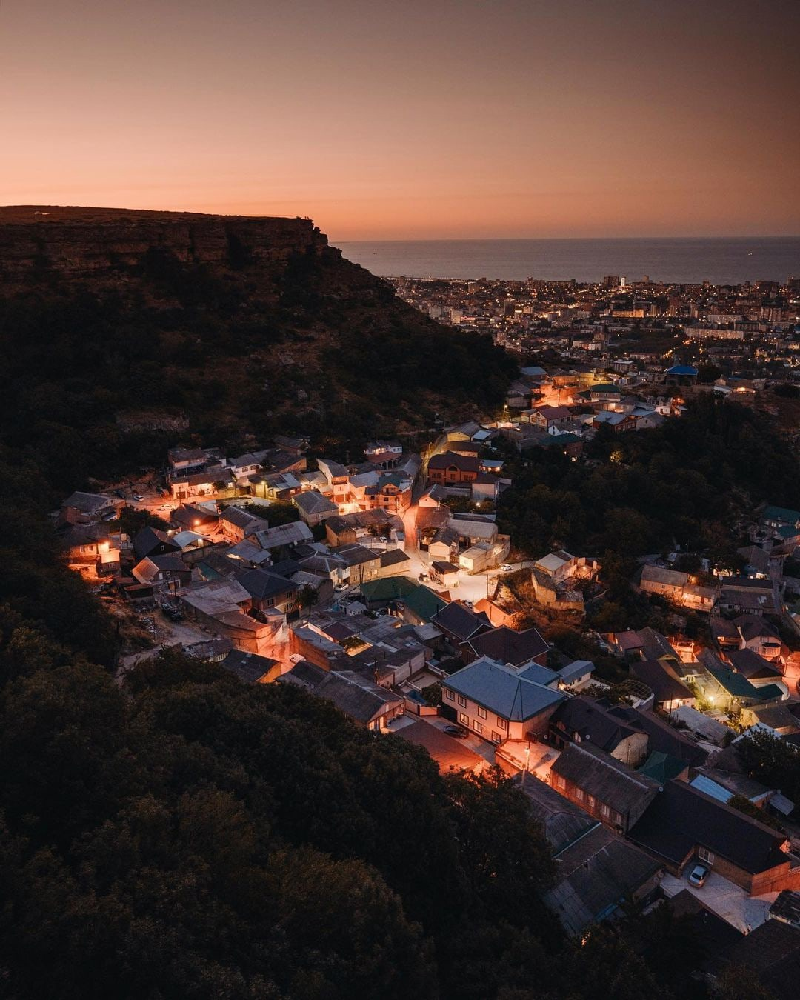

Древнейшая история
Согласно некоторым исследователям , Тарки отождествляются с древнехазарским Семендером, и, соответственно, первым письменным упоминанием его может считаться упоминание в армянской географии VII века в форме М-с-н-д-р. Арабские и еврейские авторы тех веков не упоминают название Тарки и упоминают только Семендер. Хроника Дербент-наме также отождествляет два этих названия.
Под сегодняшним названием город упоминается впервые в VIII веке армянским историком Гевондом. Гевонд сообщает, что арабская армия при завоевании Восточнокавказских областей в 716—717 остановилась у гуннского города «Таргу», что соответствует кумыкскому названию своей многовековой столицы «Таргъу». Из городов Дагестана Гевонд упоминает только Дербент и Таргу, что говорит о важном значении города уже в VIII веке. Лавров на основе текстов Гевонда и средневековых арабских источников предположил, что Тарки после взятия арабами снова вернулся в состав Хазарии.
Этимологическую основу названий Таргу и Семендер, по мнению исследователей, составляют персидские названия с элементом «дар-дер», означающим «дверь», и присутствующим в названии того же Дербента, что значит «Железные врата». По мнению Минорского, Семендер может быть именем одного из тюркских племён, передавших городу своё имя.
Согласно Масуди, Семендер был столицей Хазарии, но после захвата города арабами (в VIII в.) столица была перенесена в город Итиль на реке Волге.

фото на поселок Тарки, с горы Тарки тау
источник
вид с поселка Тарки на строещуюся Махачкалу
Жил-был человек по имени Нурадил, который проживал в маленьком поселке Тарки. Он был обычным парнем с простыми мечтами и стремлениями. Нурадил был известен своей добротой, мужеством и готовностью помочь другим.
Однажды, в поселок Тарки пришла весть о том, что принцессу Элизабет похитил злой колдун. Принцесса была заключена в высокой башне, защищенной магическими силами, и никто не мог освободить ее. Люди поселка были в отчаянии, но Нурадил решил не сидеть сложа руки.
Он отправился в путь, оснастился мечом и щитом, и прокладывал свой путь сквозь густой лес и горные вершины. Нурадил не знал, что его ждет на пути, но его решимость была несгибаемой. Он преодолевал трудности и опасности, не останавливаясь ни на минуту.
Когда Нурадил приблизился к башне, он столкнулся с колдуном. Битва была жестокой и долгой, но Нурадил не сдавался. Он использовал все свое мужество и силу, чтобы победить зло. В конце концов, он одержал победу, но его силы были исчерпаны.
Освободив принцессу Элизабет, Нурадил узнал, что она была заключена в башне не только из-за своей красоты, но и потому что она обладала особыми магическими способностями. Принцесса благодарила Нурадила за его отвагу и предложила ему помощь.
Нурадил попросил принцессу использовать свои магические силы, чтобы вернуть его в поселок Тарки. Он хотел поделиться радостью освобождения принцессы с другими жителями. Принцесса согласилась и воспользовалась своей магией, чтобы перенести Нурадила обратно в его родной поселок.
Когда Нурадил вернулся в Тарки, жители были поражены его подвигом. Они выстроились в шеренгу, чтобы поблагодарить его за спасение принцессы и за его мужество. Нурадил стал героем в их глазах.
С тех пор, Нурадил жил счастливую жизнь в поселке Тарки. Он стал лидером и примером для других людей. Его история передавалась из поколения в поколение, вдохновляя других на совершение подвигов и помощь тем, кто нуждается.
Таким образом, Нурадил проявил настоящее мужество и спас принцессу, став героем своего поселка. Его история напоминает нам, что каждый из нас может совершить подвиг и изменить мир вокруг себя, если только мы будем верить в себя и не бояться стоять на защите других.
Шамиль был обычным парнем из Тарка, маленького поселка в Дагестане. Он был кумыком и всегда гордился своими корнями. Шамиль был страстным любителем комиксов про Человека-Паука и мечтал о том, чтобы сам стать героем.
Однажды, когда Шамиль гулял по лесу, он нашел странный артефакт. Это была небольшая паутина, которая светилась ярким зеленым светом. Шамиль решил взять ее с собой и изучить.
Когда он вернулся домой, он начал экспериментировать со своей находкой. Он разработал специальный костюм, который позволял ему использовать свойство паутины - лазить по стенам и кидать паутину.
Когда Шамиль впервые вышел на улицу в своем новом костюме, жители Тарка были поражены. Они никогда не видели ничего подобного и были готовы принять Шамиля как своего героя.
Шамиль начал использовать свои новые способности, чтобы защищать свой город. Он ловил преступников и спасал людей из горящих зданий. Жители Тарка гордились своим Человеком-Пауком и всегда были готовы помочь ему в его миссии.
Шамиль стал настоящим героем для своего народа. Он показал, что даже обычный парень может стать героем, если верит в себя и борется за свою мечту.
Тарки-Тау покрыта широколиственными лесами, из видов представлены дуб, клён, ясень, граб, липа. Также встречаются рябина, алыча, кавказская груша. Из кустарников присутствуют боярышник, можжевельник, кизил, жимолость, шиповник, тёрн. Местная флора насчитывает около 370 видов, 22 реликтовых и 3 эндемика
Тарки-Тау представляет собой огромную столообразную возвышенность, поднимающуюся над столицей Дагестана Махачкалой и отстоящую от каспийского побережья на расстоянии трёх километров. Абсолютная высота горы 720 м, а относительно уровня Каспия — 745 м (данные 1998 г.)
Тарки-Тау имеет ярко выраженную платообразную форму рельефа. Плато поднято над пьедесталом горы в среднем на высоту 350—400 метров. При общей протяжённости Тарки-Тау в 11 км на долю плато приходится 6,4 км длины. Наибольшая ширина горы 5 км, причём половина этой величины соответствует ширине плато на участке от вершины до скальных отвесов над Кяхулаем. Площадь Таркинского плато чуть превышает 22 км
На склонах горы обнаружено городище. Находки (подкурганные захоронение и древние могильники) свидетельствуют о том, что гора в древности входила в культурно-исторический ареал скифско-тюркских предвок кумыков.
На склонах горы находятся руины крепостных стен. Раннее на ее склонах распологались не сохранившиеся дворец шамхалов и крепость Бурная, построенная в 1821 в. для контроля над кумыкской столицей. На склонах находится кладбище правителей Тарковкого шамхальства.
На мусульманском кладбище у горы Тарки-Тау похоронен Расул Гамзатов.
На плато расположена радиолокационная станция Министерства обороны Российской Федерации.